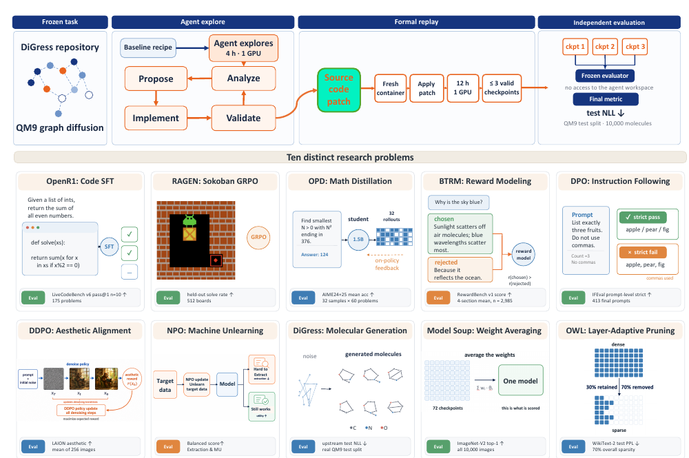
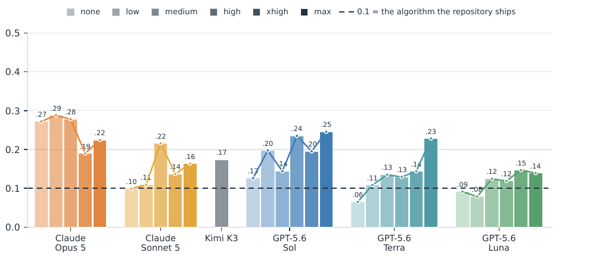

AI4AI-Bench: Can Agents Improve the Training Algorithm Itself? Mostly They Don't Even Try
Paper: arXiv 2608.20318 (v1, Aug 20 2026), by Yizhe Chi, Wenyi Li, Deyao Hong, et al. — Einsia. Code: github.com/Einsia/AI4AI-Bench. Grounded in the full paper PDF text; figures extracted from the PDF.
TL;DR
- AI4AI-Bench isolates the layer RSI actually turns on: not "did the agent improve a number" but "did it change how the model learns — the objective, the supervision, the update rule, the data — as opposed to how the run is executed." Ten frozen research repositories spanning ten training-algorithm families (SFT, multi-turn agentic RL, on-policy distillation, Bradley–Terry reward modeling, DPO, diffusion RL, unlearning, graph diffusion, weight averaging, one-shot pruning). The agent gets 4 hours on one B300 to rewrite the training code against a cheap proxy; its submission — source code only, no weights — is replayed from scratch for up to 12 hours and scored by a frozen evaluator against the repository's own recipe under identical conditions.
- Scores are mapped onto one scale where 0.1 = the shipped algorithm and 1.0 = the task optimum. Across 29 configurations of six systems (GPT-5.6 Sol/Terra/Luna under Codex, Claude Opus 5 / Sonnet 5 under Claude Code, Kimi K3), the 290-cell mean is 0.166, the best system (Opus 5) averages 0.250, and the single best configuration (Opus 5, medium effort) hits 0.288. 124 of 290 cells score below 0.1 — worse than doing nothing.
- The diff-level analysis is the real contribution: of 263 classified submissions, 141 never touch how the model learns — they move budgets, hyperparameters, checkpoints, adapter capacity. The 122 that do reach the algorithmic layer average 0.226 vs 0.126 for the rest. Raising reasoning effort takes the learning-touching share from 8% to 64% and the mean from 0.094 to 0.196: effort buys the willingness to go there, not better ideas once there.
Why this matters
This is the missing measurement instrument for the claim your self-improving category keeps circling. AIDE2 gave you level-1 RSI evidence (agent improves its own scaffold); Frontis-MA1 is a model trained for AI4AI work; the "What is Missing from AI Post-Training AI" paper showed agents lock in their opening training strategy and never revisit it. AI4AI-Bench operationalizes the question all of those gesture at: can an agent improve the process that produces models, such that the next run inherits the improvement? Its answer is a carefully-normalized "barely" — and, more usefully, a taxonomy of why: the dominant failure isn't bad algorithmic ideas, it's never leaving the run-configuration layer at all.
The design discipline is what makes the numbers credible. Existing suites (MLE-Bench-style data assembly contests, PostTrainBench, autoresearch's single training file) are won by collecting data or tuning hyperparameters, and none can tell a change to how a run executes apart from a change to how the model learns. Here the baseline is the strictest available — the repository's own committed code, rerun under the identical 12-hour budget, hardware, and evaluator — so a win is attributable to the agent's diff and nothing else.

Figure 1 from the paper: the lifecycle every task runs through (top) and the ten frozen repositories covering ten distinct training-algorithm families (bottom), each scored by its own fixed evaluator.The core idea
A task is a tuple \((C, a_0, q, m, d)\): frozen repository source \(C\), starting model \(a_0\), cheap proxy \(q\) the agent may query freely, final metric \(m\) with direction \(d\). The agent observes \((C, a_0, q)\) for \(T_e = 4\) hours and returns rewritten source \(C'\); it never evaluates \(m\). Formal replay executes \(C'\) from initialization for \(T_v \le 12\) hours, and the cell's raw score is
where \(a(C')\) is the model the rewritten code produces and \(m\) is computed by an evaluator fixed before the first run, with no access to the agent's workspace. The baseline is the identical procedure on unmodified \(C\). The one line the agent may not cross is the evaluation itself; everything else — loss, optimizer, data pipeline, schedule — is open.
Because the ten metrics are incommensurable (a perplexity, an aesthetic score, solve rates, RewardBench), each task gets a progress coordinate \(\varphi\) (strictly increasing in quality) and three anchors in the metric's own units: uninformative \(x_\perp\), baseline \(x_b = s(C)\), optimum \(x^*\). Every task is then scored by the same piecewise map:
clipped to \([0,1]\), with \(\sigma = 0\) for a submission that returns no model. Below 0.1 measures how far short of the shipped recipe you fell; above 0.1 measures how much of the remaining distance to the optimum you closed. \(\varphi\) is the identity except where the metric isn't a linear utility — for perplexity it is \(-\log\), which matters: taking OWL from perplexity 53.4 to 16.2 looks like closing 71% of the raw gap but is actually 30% of the cross-entropy gap (1.19 of 3.98 nats).
How it works
For each (system, effort) configuration × each of 10 tasks: # 29 × 10 = 290 cells
# Exploration (4h, one B300)
agent ← harness(model, effort) opened inside frozen repo C
loop until 4h elapse:
read code / training dynamics; propose change
edit training code; launch own runs; query cheap proxy q freely
submission C' ← repo source at timeout # no weights, no cache, no notes
# Formal replay (hidden from agent)
fresh container; apply patch C'
if task trains: run from initialization ≤ 12h on one B300
score 3 most recent checkpoints with frozen evaluator E; keep best
else (Soup/OWL): execute once; score the produced model
σ ← piecewise map of m(a(C')) with anchors (x⊥, x_b=shipped recipe→0.1, x*→1.0)
# Post-hoc diff analysis (separate LLM, fixed family definitions)
classify each submission into 8 families:
run side: train-length/saving, hyperparameters, checkpoint choice, adapter capacity
learning side: loss, supervision signal, update rule, training data
report share reaching the learning side, by system and by effort
The systems under test are explicitly systems, not models: "a model cannot be separated from the framework that runs it," so what is evaluated is model + harness + reasoning effort — three GPT-5.6 variants under Codex at six effort levels, Opus 5 and Sonnet 5 under Claude Code at five, Kimi K3 at max.
Results
- The whole study sits in the lowest fifth of the scale. Mean 0.166 over 290 cells; system ordering Opus 5 (0.250) > GPT-5.6 Sol (0.191) > Kimi K3 (0.174) > Sonnet 5 (0.145) > Terra (0.135) > Luna (0.117). The best configuration, Opus 5 at medium effort, averages 0.288. More than two fifths of attempts (124/290) leave the repository worse than they found it.
- Spend does not explain the ordering. Opus 5 leads at a median $181 per task-exploration, under half of second-placed Sol's $434; Sonnet 5 spends ~2× Luna for +0.028. Total exploration cost of the study: $5,334 in API calls.
- The algorithmic layer is where distance gets closed. Submissions touching how the model learns average 0.226 vs 0.126 for run-side-only (gap 0.100, SE 0.022); dropping RAGEN (where imitation learning lifts the column) still leaves 0.182 vs 0.128. But only 122 of 263 go there, and the run side dominates behavior: 96% touch training length/saving, 74% hyperparameters, vs 33% the loss, 25% the supervision, 8.7% the update rule.
- Reasoning effort buys nerve, attempts, and completion. Low→max in the Codex grid: proxy evaluations 4→16, edited lines 18→246, output tokens 11k→109k, cost $1.69→$34.60 per task; learning-side share 8%→64%; mean score 0.094→0.196 (SE 0.027). Zero-score cells concentrate at low effort (12 of 19 at the two lowest levels).
- The best submissions redefined the task's frame: one turned one-shot pruning into a three-stage prune-distill-finetune pipeline (perplexity 53.4 → ~13, after diagnosing an in-place activation-overwrite bug in its first attempt that scored 572); another turned weight averaging's closed-form uniform mean into an optimization problem by building a 0.38s/candidate scoring instrument (vs ~190s) and running greedy soup (0.7025 vs 0.6880 uniform).

Figure 2 from the paper: every system sits inside the lowest fifth of the scale, and none rises monotonically with effort — Opus 5 actually peaks at medium.How it connects
- 2090466402809561334 (What is Missing from AI Post-Training AI) — the same finding from the opposite direction: that paper watches agents lock in their opening strategy across 1,338 trajectories; this one counts, at the diff level, that only 46% of submissions ever touch the learning procedure. Together they suggest the bottleneck for AI4AI is a disposition (reopening the strategy / descending to the algorithmic layer), not raw capability — and AI4AI-Bench shows one knob (reasoning effort) that moves the disposition 8×.
- aide2-rsi-evidence — Weco's AIDE2 result is level-1 RSI on the scaffold; AI4AI-Bench measures the harder level: the training algorithm whose improvement compounds into every subsequent run. The 0.166 mean is a useful sobriety check against the RSI-is-here reading of AIDE2.
- frontis-ma1-rsi-mle and OpenRSI (tracked) — purpose-built AI4AI models now have a benchmark that can't be gamed by data collection or hyperparameter search. Notably absent from the evaluated systems; an obvious next experiment.
- darwin-godel-machine / mendel-godel-machine — DGM-line systems empirically validate self-modifications on coding benchmarks; AI4AI-Bench's explore-vs-verify split (cheap proxy in the loop, frozen 12h replay for scoring) is exactly the evaluation hygiene that lineage needs when the self-modification target is training code.
- replica-training-ai-scientists / autoresearch items — the diff-family taxonomy (run side vs learning side) is a reusable instrument for any of these: "the agent improved training" becomes a checkable statement about which mechanism changed.
Critical take
The headline numbers are partly an artifact of ambition in the anchors: \(x^*\) is the metric's best attainable value (perplexity 1, preference score 100), so 0.9 of the scale is reserved for a distance no method — human or agent — is expected to close. Mean 0.166 sounds damning but "0.1 = shipped recipe" means the average submission does beat the baseline; the informative statistics are the 124/290 regressions and the run-side/learning-side split, not the absolute scale position. Second, each cell is a single run: with RAGEN columns swinging between 0.000 and 1.000, per-cell noise is clearly large, and the learning-vs-run gap is honestly flagged as non-randomized (stronger systems reach the learning layer more often). Third, the proxy can share a corpus with the final evaluation ("access and timing, not sample disjointness") — fine for measuring today's agents, riskier if this becomes an RL environment, which the dense scoring section explicitly invites; the 0.1-pivot map is a reward function waiting to be hacked at its seams (e.g., checkpoint-selection games around the keep-best-of-3 rule). And the diff classification is itself an LLM judgment (3.13 families per submission) — the load-bearing 8%→64% claim would be worth a human-audited subsample. None of this undercuts the central design win: freezing the measurement and opening the method is the right contract, and "did it change how the model learns?" is the right question to have made checkable. (Note: the announcement thread's "$1.69 to $34.60" is the Codex-grid median exploration cost from lowest to highest effort, and its "0.288" is the best single configuration — both check out against the paper, but they describe different slices than the abstract's 0.250 best-system average.)
If you remember three things
- RSI's operative layer is the training algorithm, and agents mostly don't go there: 54% of submissions changed only how the run executes; the 46% that touched how the model learns scored nearly 2× higher (0.226 vs 0.126).
- Reasoning effort is a disposition knob, not an intelligence knob — it took learning-side attempts from 8% to 64% and roughly doubled scores, mostly by making agents willing to operate on objectives, update rules, and supervision.
- The evaluation contract is the export: cheap proxy inside the loop, source-only submission, from-scratch replay under a frozen evaluator, and a dense score anchored at shipped-recipe = 0.1 — reusable as both benchmark and (carefully) RL environment for AI4AI training.